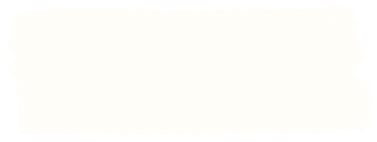

<!doctype html>
<html lang="en">
<head>
<meta charset="utf-8">
<meta name="viewport" content="width=device-width, initial-scale=1">
<title>Goobne Social Media Management — June</title>
<link rel="stylesheet" href="_ds/june-portfolio-design-system-6caff167-950c-4725-9fe6-16f1996806b8/styles.css">
<link rel="stylesheet" href="case.css">
<style>.gb-flow{margin-top:var(--space-5)}.gb-flow-row{display:grid;grid-template-columns:minmax(0,1fr) 24px minmax(0,1fr) 24px minmax(0,1fr) 24px minmax(0,1fr);align-items:stretch}.gb-flow-arrow{align-self:center;text-align:center;font:400 17px/1 var(--font-body);color:var(--color-charcoal)}.gb-flow-card{background:var(--color-paper-light);filter:drop-shadow(var(--shadow-paper));padding:var(--space-4);display:flex;flex-direction:column;gap:var(--space-2)}.gb-flow-head{display:flex;align-items:baseline;gap:var(--space-2)}.gb-flow-num{font:italic 400 16px/1 var(--font-display);color:var(--color-primary)}.gb-flow-card ul{margin:var(--space-2) 0 0;padding:var(--space-3) 0 0 18px;border-top:1px solid var(--color-line);display:flex;flex-direction:column;gap:4px;font:400 15px/1.4 var(--font-body);color:var(--color-ink)}.gb-flow-card li::marker{color:var(--color-primary)}.gb-flow-back{position:relative;margin:0 calc(12.5% - 6px);height:40px;border:1px solid var(--color-charcoal);border-top:none;display:flex;justify-content:center;align-items:flex-end}.gb-flow-back::before{content:"";position:absolute;left:-5px;top:-1px;border:5px solid transparent;border-bottom:7px solid var(--color-charcoal);border-top:none}.gb-flow-back span{white-space:nowrap;transform:translateY(50%);line-height:1;background:var(--color-paper-light);padding:0 var(--space-3);font:400 15px/1.3 var(--font-body);color:var(--color-charcoal)}@media (max-width:768px){.gb-flow-row{grid-template-columns:minmax(0,1fr);gap:var(--space-3)}.gb-flow-arrow{transform:rotate(90deg)}.gb-flow-back{display:none}}</style>
<script src="https://unpkg.com/react@18.3.1/umd/react.development.js" integrity="sha384-hD6/rw4ppMLGNu3tX5cjIb+uRZ7UkRJ6BPkLpg4hAu/6onKUg4lLsHAs9EBPT82L" crossorigin="anonymous"></script>
<script src="https://unpkg.com/react-dom@18.3.1/umd/react-dom.development.js" integrity="sha384-u6aeetuaXnQ38mYT8rp6sbXaQe3NL9t+IBXmnYxwkUI2Hw4bsp2Wvmx4yRQF1uAm" crossorigin="anonymous"></script>
<script src="https://unpkg.com/@babel/standalone@7.29.0/babel.min.js" integrity="sha384-m08KidiNqLdpJqLq95G/LEi8Qvjl/xUYll3QILypMoQ65QorJ9Lvtp2RXYGBFj1y" crossorigin="anonymous"></script>
<script src="_ds/june-portfolio-design-system-6caff167-950c-4725-9fe6-16f1996806b8/_ds_bundle.js"></script>
<script src="image-slot.js"></script>
</head>
<body>
<div id="root"></div>
<script type="text/babel" src="case-kit.jsx"></script>
<script type="text/babel">
const hero = {
  eyebrow: 'Goobne Chicken · An oven-focused food franchise in Korea',
  title: <span style={{ fontSize: 62 }}>Always-on social content</span>,
  desc: "Goobne Chicken is one of Korea's leading food franchises, known for oven-baked dishes. It started as a chicken franchise and expanded its menu to pizza, desserts and more. Its social media targeted a young audience aged 18–24 to build brand awareness and visibility.",
  ownedNote: "It was the full experience of social media management: from target and trend research to content planning, scheduling, shooting and reporting. It taught me to manage a channel from start to finish. I'm passionate about food culture and cooking, so I styled most of the shoots myself.",
  ownedPaper: true,
  compact: true,
  center: true,
  overview: [['Period', 'Feb 2021 – Jan 2022'], ['Role', 'Account Executive'], ['Channel', 'Facebook'], ['Discipline', 'Social media management']],
  media: <div style={{ display: 'grid', gridTemplateColumns: 'repeat(2,minmax(0,1fr))', gap: 'var(--space-4)', alignItems: 'center', position: 'relative' }}>
    <Photo id="gb-hero-a" src="uploads/굽네_할로윈.png" ratio="1/1" tilt={-2} tape={1} onRed placeholder="Halloween content" />
    <Photo id="gb-hero-b" src="uploads/굽네_찬바람불땐굽네.png" ratio="1/1" tilt={1.5} tape={2} onRed placeholder="Winter content" style={{ marginTop: 'var(--space-6)' }} />
    
  </div>,
};
const flow = [
  ['01', 'Plan', ['Audience insight', 'Four content pillars', 'Monthly calendar', 'Client sign-off']],
  ['02', 'Design and shoot', ['Production brief', 'Food styling', 'Video team shoot', 'Design team handoff']],
  ['03', 'Publish and amplify', ['On-schedule posting', 'Boost top posts', 'Target teen audience', 'Customer management']],
  ['04', 'Report', ['Fans, organic reach', 'Paid performance', 'Why it worked', "Next month's plan"]]
];
const GbFlow = () => <div className="gb-flow">
  <div className="gb-flow-row">{flow.map(([n, t, items], i) => <React.Fragment key={n}>
    {i > 0 && <span className="gb-flow-arrow" aria-hidden="true">→</span>}
    <div className="gb-flow-card">
      <div className="gb-flow-head"><span className="gb-flow-num">{n}</span><h4 className="cs-h4" style={{ margin: 0, fontSize: 16 }}>{t}</h4></div>
      <ul>{items.map(x => <li key={x}>{x}</li>)}</ul>
    </div>
  </React.Fragment>)}</div>
  <div className="gb-flow-back"><span>Why it worked shapes next month's plan</span></div>
</div>;
const loop = [['01', 'Plan'], ['02', 'Style & shoot'], ['03', 'Publish & amplify'], ['04', 'Report']];
const pillarSrc = { 'gb-pl-1': '-_--mvdvdpnk-7yi4.png', 'gb-pl-2': '7-9--mvdvehkb-pha3.png' };
const pillars = [
  ['gb-pl-1', 'Choice-based', 'Interactive posts that drive participation, suggesting two situations', 'Goblin vs Marbling'],
  ['gb-pl-2', 'Meme', 'Based on Gen Z humour and fads that make the brand relatable', 'Egg tart astronaut'],
  ['gb-pl-3', 'Sizzle', 'Vivid visuals and styled food scenery that spark product interest', 'Goobne fusion set'],
  ['gb-pl-4', 'Seasonal', 'Tied to Halloween, Christmas and other timely moments', 'Early Christmas'],
];
const styled = [
  ['gb-st-1', 'Seasonal content for Christmas', 'Chi-Pi-D'],
  ['gb-st-2', 'Seasonal content for spring picnic', 'Christmas Eve'],
  ['gb-st-3', 'Seasonal content for Christmas party', 'Shooting plan'],
];
const Tape = window.JunePortfolioDesignSystem_6caff1.Tape;
const Todo = ({ children }) => <span className="gb-todo">{children}</span>;
const Kv = ({ k, children }) => <P><strong>{k}</strong> {children}</P>;
const GbLoop = () => <div className="gb-loop">
  <div className="gb-loop-row">{loop.map(([n, t], i) => <React.Fragment key={n}>
    <div className="gb-loop-node"><span className="gb-loop-num">{n}</span><span className="cs-h4">{t}</span></div>
    {i < loop.length - 1 && <span className="gb-loop-arrow" aria-hidden="true">→</span>}
  </React.Fragment>)}</div>
  <div className="gb-loop-back"><span className="cs-label">← Findings set next month</span></div>
</div>;
function App() {
  return <CasePage endFrom="paper" nav="Core project 03" hero={hero}>
    <Band first>
    <CaseSection num="01" title="Strategy" id="strategy">
      <div style={{ position: 'relative', alignSelf: 'flex-start', width: 779, maxWidth: '100%', height: 84, display: 'flex', alignItems: 'center', justifyContent: 'center', marginLeft: 'calc(-1 * var(--space-5))', textAlign: 'center', whiteSpace: 'nowrap', marginBottom: 'calc(-1 * var(--space-4))' }}><div style={{ position: 'relative' }}><P><strong>Business objective:</strong> Creating brand awareness and mental availability for the young target</P></div></div>
      <P lead>For the annual plan, we built four content pillars, each in a different format, and planned every month with a similar share of all four. The balanced mix was a deliberate test: it showed which formats actually drove teen engagement, so the next month could lean into what worked. What I found was that the audience engaged most with choice-based content, leaving comments and tagging their friends.</P>
      <Cols n={4}>{pillars.map(([id, t, d, ph], i) => <div key={id} style={{ display: 'flex', flexDirection: 'column', gap: 'var(--space-3)' }}>
        <Photo id={id} src={pillarSrc[id]} ratio="1/1" fit="contain" tilt={[-1.5, 1, -0.5, 1.5][i]} tape={i} placeholder={ph} />
        <div className="cs-group" style={{ gap: 'var(--space-1)' }}><h4 className="cs-h4" style={{ fontSize: 16 }}>{t}</h4><Sm>{d}</Sm></div>
      </div>)}</Cols>
    </CaseSection>
    </Band>
    <CaseSection num="02" title="Execution" id="execution">
      <Group label="Content planning &amp; scheduling">
        <P>I planned video and image content around the four pillars each month. I worked with the client, listened to their feedback and revised the content from draft mock-ups. The design team then produced the final assets, and I worked closely with them, drawing on my knowledge of design tools and process.</P>
        <div style={{ marginTop: 'var(--space-3)', display: 'grid', gridTemplateColumns: 'repeat(2,minmax(0,1fr))', gap: 'var(--space-4)' }}>
          <Photo id="gb-plan-cal2" src="uploads/pasted-1792331219093-0.png" ratio="1000/563" fit="contain" tilt={-0.5} tape={1} placeholder="Monthly content calendar" />
          <Photo id="gb-plan-detail2" src="uploads/pasted-1792331233632-0.png" ratio="1000/563" fit="contain" tilt={0.5} tape={4} placeholder="Content plan detail" />
        </div>
      </Group>
      <Group label="Styling and shooting">
        <P>We shot the content with the internal production team, and I also appeared on camera when needed. I styled every shoot myself, from plating and props to party-style table settings, and styled for how the shot would be framed, not just for the plate. These are some examples of my styling.</P>
        <div style={{ marginTop: 'var(--space-3)', display: 'grid', gridTemplateColumns: 'minmax(0,1fr) minmax(0,1fr) minmax(0,1fr) minmax(0,1.5fr)', gap: 'var(--space-4)' }}><div style={{ display: 'flex', flexDirection: 'column', gap: 'var(--space-3)' }}>
          <div style={{ position: 'relative', filter: 'drop-shadow(var(--shadow-paper))', transform: 'rotate(1deg)' }}><video src="uploads/download.mp4" autoPlay muted loop playsInline style={{ display: 'block', width: '100%', aspectRatio: '1/1', objectFit: 'cover', background: 'var(--color-paper-light)' }}></video><Tape color="red" width={88} angle={-4} position="tc" /></div><Sm>Sizzle content with new launch pizza</Sm>
        </div>{styled.map(([id, cap, ph], i) => <div key={id} style={{ display: 'flex', flexDirection: 'column', gap: 'var(--space-3)' }}>
          <Photo id={id} ratio={i === 2 ? '730/487' : '1/1'} fit="contain" tilt={[-1.5, 1, -0.5][i]} tape={i + 2} placeholder={ph} /><Sm>{cap}</Sm>
        </div>)}</div>
      </Group>
      <Group label="Reporting">
        <P>I wrote weekly and monthly reports on the content. In particular, I focused on fan numbers, organic reach and paid performance. I analysed what performed and what didn't and why. Those findings set the next month's content direction and ad spend.</P>
        <div style={{ marginTop: 'var(--space-3)', display: 'grid', gridTemplateColumns: 'repeat(2,minmax(0,1fr))', gap: 'var(--space-4)' }}>
          <Photo id="gb-rep-a" src="uploads/pasted-1792331729891-0.png" ratio="1330/739" fit="contain" tilt={-0.5} tape={false} placeholder="Monthly overview report" />
          <Photo id="gb-rep-b" src="uploads/pasted-1792331734367-0.png" ratio="1330/739" fit="contain" tilt={0.5} tape={false} placeholder="Best contents analysis" />
        </div>
      </Group>
      <Group label="Monthly cycle">
        <P>Building on the business objective, I followed this cycle for managing social media from end to end. What the report showed about why content worked fed straight back into the next month's plan. For instance, we made more of the content types with high engagement.</P>
        <GbFlow />
      </Group>
    </CaseSection>
    <Band last>
    <CaseSection num="03" title="Outcome">
      <P>Choice-based content consistently drove the most engagement and comments of the four pillars. It tapped into the 'balance game' trend in Korea, where you have to pick just one of two options. While I ran the account, followers grew by approximately 8.3% and average organic reach rose steadily.</P>
      <Cols n={2} cls="cs-outcome">
        <div style={{ display: 'flex', flexDirection: 'column', gap: 'var(--space-4)' }}>
          <Stat value="+8.3%" title="Page followers">Increased from approximately 378K to 410K in 10 months</Stat>
          <ChartCard label="Page fans · Mar 2021 vs. Jan 2022"><Bars barW="40%" base={300} data={[['2021.03', 378, false, '378K'], ['2022.01', 410, true, '410K']]} /></ChartCard>
        </div>
        <div style={{ display: 'flex', flexDirection: 'column', gap: 'var(--space-4)' }}>
          <Stat value="+26%" title="Organic reach">A steady upward trend through the operation period, from 146,869 in March 2021 to 184,752 by January 2022</Stat>
          <ChartCard label="Monthly organic reach · thousands"><Bars base={100} data={[["Mar",146.9,false,"147K"],["Apr",132,false,undefined],["May",150,false,undefined],["Jun",157,false,undefined],["Jul",143,false,undefined],["Aug",178,true,"178K"],["Sep",155,false,undefined],["Oct",178,false,undefined],["Nov",186,false,undefined],["Dec",210,true,"210K"],["Jan",184.8,false,"185K"]]} /></ChartCard>
        </div>
      </Cols>
    </CaseSection>
    </Band>
  </CasePage>;
}
ReactDOM.createRoot(document.getElementById('root')).render(<App />);
</script>
</body>
</html>
